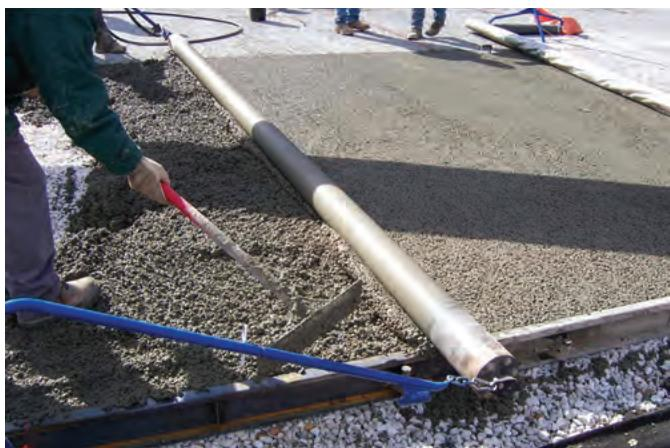
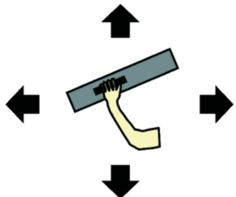
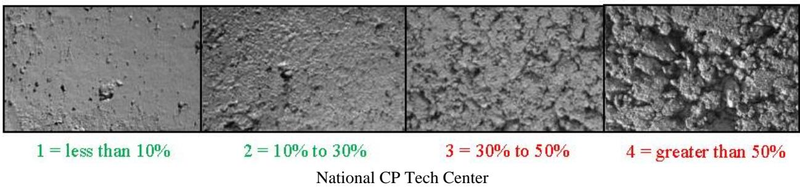
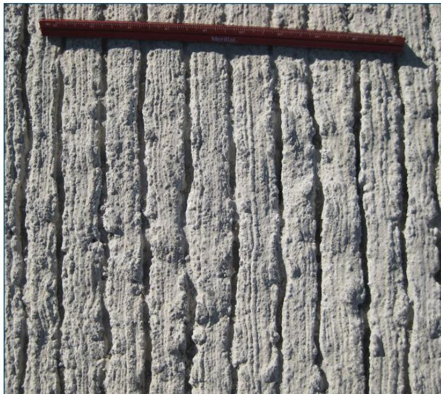

Concrete Surface Agitation and Consolidation
Concrete surface agitation and consolidation is the suite of vibration, tamping, drag‑texturing or related actions applied to fresh concrete to overcome inadequate compaction and achieve a uniformly dense slab [1][3]. By eliminating entrapped air, voids and segregation, these techniques densify the mix, prevent delamination, produce the required texture for safety, and reduce tire‑pavement noise while allowing early service of the pavement [4][5]. Consolidation is performed with internal vibrators (heads < 25 mm) or vibrating screeds held at a 15–30° angle—swept until the mix ceases to settle, no bubbles rise, and a smooth mortar surface appears—or with hand tools in confined repairs, provided ambient temperatures are at least 4 °C (40 °F) unless additional warm‑mix or insulation measures are taken [5][9].
Sources (13)
Purpose and applicability
The combined guidance indicates that concrete surface agitation and consolidation is employed to overcome the lack of adequate compaction in fresh concrete. Without it, slabs can develop uneven surfaces, retain excess air, suffer segregation, and miss required texture for safety; trapped air and low density lead to weak repairs, spalling, rapid deterioration, delayed opening to traffic, and even heightened tire‑pavement noise. By applying vibration, tamping, drag‑texturing or related techniques, the process eliminates voids, densifies the mix, prevents delamination, and produces a durable, uniformly dense surface suitable for early service and reduced noise. [1][3][4][5][7][8][9][10][11]
[1] — Ch. 3 (p. 58), Ch. 6 (p. 163), Ch. 10 (pp. 314–333); [3] — 2 Overview of Concrete Pavemen… (pp. 22–23); [4] — Construction (pp. 40–41), Description (p. 49); [5] — Placement and Consolidation of… (pp. 26–27); [7] — Ch. 5 (p. 56); [8] — Ch. 3 (p. 68), Ch. 4 (pp. 331–332); [9] — Ch. 5 (p. 115); [10] — Fixed-Form Paving (p. 22), Slipform Paving (p. 22); [11] — Ch. 5 (pp. 102–103)
Surface agitation and consolidation is recommended whenever a repair patch of Portland‑cement concrete or rapid‑set proprietary material is placed, provided the ambient temperature is above the minimum limit (≈4 °C / 40 °F). The guides agree that “Almost all repair materials require consolidation during placement.” The preferred techniques are “Use of internal vibrators with small heads (less than 25 mm … or diameter less than 1 in.)” and “Use of vibrating screeds,” with the vibrator held at a slight angle (15‑30°) and moved through the zone until “no more settling, air bubbles, or surface irregularities appear.” Consolidation is considered complete when “the mix stops settling, no bubbles rise and a smooth mortar surface appears.”
When the repair area is too small for an internal vibrator or the lift thickness is minimal, the guides advise using hand tools instead. For very small repairs “the mixture can be consolidated using hand tools,” with “cutting with a trowel seems to give better results than rodding or tamping.” Rodding or tamping may also be employed, but hand‑tool troweling is preferred in tight spaces.
Temperature constraints require alternative actions. If the air or pavement temperature is below about 4 °C (40 °F), placement should not be attempted unless “additional measures such as warm water, insulating covers, or longer cure times” are applied; otherwise a different method that does not rely on standard vibration‑consolidation must be used.
In paving applications, agitation and consolidation with vibratory screeds or portable devices is appropriate for “Fixed-form paving … necessary for small areas, including intersections, tight corridors, and ADA curb ramps.” For larger slabs or continuous runs where fixed side forms are inefficient, a different placement method—such as slipform paving, which spreads and consolidates the material without side forms—is recommended. Agencies often require slipform for sections longer than 200 ft because “a slipform paver generally produces better quality pavement, particularly over a long distance,” while a hand‑work crew using fixed forms can achieve comparable results but with slower production. [5][9][10][11]
The figure below illustrates a practical application of this method on the Legacy Trail.
 Workers smoothing a concrete trail using slipform paving techniques. [10]
Workers smoothing a concrete trail using slipform paving techniques. [10]
The image displays a wide, continuous concrete path being finished by workers in the field, illustrating the application of slipform paving for large slabs or continuous runs where fixed side forms are not used.
[5] — Placement and Consolidation of… (pp. 26–27); [9] — Ch. 5 (p. 115); [10] — Fixed-Form Paving (p. 22), Slipform Paving (p. 22); [11] — Ch. 5 (pp. 102–103)
Required inputs
Concrete surface agitation and consolidation are governed by a set of coordinated design dimensions, tolerances, and pre‑construction quality checks. The primary hand‑float tool is described as a “large, flat, rectangular piece of wood, aluminum, or magnesium” that is “usually 8 in. wide and 39 to 60 in. long” with a “handle 1.1 to 5.5 yd long”; it must be selected before placement and used immediately after the concrete is laid. For textured surfaces created by dragging, the drag media must remain engaged with the fresh slab for at least five feet – “The drag must stay in contact with fresh concrete for a minimum of five feet” – and be constructed from heavy material meeting “heavy (AASHTO M 182, Class 3 or 4)” specifications. The trailing edge of the burlap drag is required to be “frayed along the trailing edge for a length of 2 to 6 in.” to promote uniform striations.
When pervious pavement is placed, compaction and finishing are achieved with a machine described as “Compaction and finishing is generally accomplished by a weighted roller‑screed that spins as it is pulled across the fresh concrete.” Joint spacing is typically set at “Recommended joint spacings of 20 ft (6 m) have been suggested”. Routine quality monitoring relies on “Unit weight or bulk density tests provide the best routine test to monitor quality, as well as seven-day cores to evaluate thickness and strength.”.
Repair and rapid‑setting applications employ internal vibrators whose heads are limited to small diameters: “Use of internal vibrators with small heads (less than 25 mm or 1 in. in diameter).” The vibrator is operated at a modest tilt – “The vibrator is held at a slight angle (15 to 30°) from the vertical” – and moved through an over‑filled repair zone. Placement temperature limits are strict: “Placement must not occur when air or pavement temperature is below 40°F” and, if temperatures fall under 55°F, “additional precautions such as warm water, insulating covers, or longer cure times are required.” Parallel guidance states that placement is allowed only when “air or pavement temperatures are at least 4 °C” with “additional precautions required when temperatures fall below 13 °C”. For epoxy‑based repairs the lift thickness is capped – “Some epoxy concretes may require that the material be placed in lifts not exceeding 50 mm (2 in) due to their high heat of hydration.”.
Across all concrete work, continuous placement without horizontal cold joints is emphasized: “Continuous placement (eliminating horizontal cold joints) and uniform consolidation of the concrete is important to ensure uniform strength, minimize segregation, and maintain the proper entrained air content.” Equipment must be ready – “the placing equipment must be properly set up, maintained, and inspected” – and free of hydraulic leaks, as “Oil leaks from the hydraulic systems and vibrators will result… a weakened plane in the concrete and subsequent delamination.” Concrete discharge should be close to its final location: “Concrete should be discharged as near to its final position practicable, limiting discharge height to prevent segregation.” Vibration frequency is tuned to mix and slab parameters – “The vibrator frequency is most often varied and must be matched to the concrete mix characteristics, slab thickness, paver speed, and the depth and spacing of the embedded steel.” Consolidation adequacy is confirmed when “Adequate consolidation is achieved when the mix stops settling, air bubbles no longer emerge, and a smooth layer of mortar appears at the surface.” Additional verification includes hand‑held penetration testing – “Verify that the fresh concrete is properly consolidated using several vertical penetrations of the surface with a hand‑held vibrator” – and levelness checks – “Verify that the surface of the concrete patch is level with the adjacent slab using a straightedge in accordance with contract documents” – while ensuring texture matches the surrounding pavement – “Verify that the surface of the fresh patch material is finished and textured to match the adjacent surface.”.
Finally, finishing equipment such as the trailing pan must be inspected: “Check that the trailing finishing pan is clean and free from defects,” aligned using a stringline – “Check with a stringline and adjust to be true and straight with respect to the design crown/cross‑slope(s).” – and allowed to float freely – “Adjust to be free floating on the surface of the fresh concrete.” – with personnel instructed to “Avoid walking on the trailing finishing pan when paving.” [1][3][4][5][8][9][11][12]
[1] — Ch. 10 (p. 316); [3] — 2 Overview of Concrete Pavemen… (pp. 17–23); [4] — Construction (pp. 40–41); [5] — Placement and Consolidation of… (pp. 26–27); [8] — Ch. 3 (p. 68), Ch. 4 (pp. 331–332); [9] — Ch. 5 (p. 115); [11] — Ch. 5 (pp. 102–103), Ch. 6 (p. 134); [12] — Trailing Finishing Pan (p. 30)
Equipment and personnel
The equipment required for concrete surface agitation and consolidation spans preparation through testing. For preparation, precise proportioning mixers such as batch mixers or transit mixers are used to keep aggregates at a saturated‑surface‑dry condition and permit admixture dosing. Placement is performed within conventional formwork and the fresh mix is delivered by ready‑mix trucks or mobile mixing vehicles. Consolidation and compaction are achieved either with a weighted roller‑screed that spins as it is pulled across the fresh slab, or by inserting a hand‑held vibrator through several vertical penetrations of the surface; joints are cut immediately after placement using a rolling joint tool. Surface finishing is provided by the same roller‑screed and level checks are made with a straightedge against the existing slab. Curing begins with fog misting followed by plastic sheeting, or alternatively a curing compound applied in two perpendicular passes, and insulation blankets are employed when ambient temperatures fall below 4 °C (40 °F). Quality monitoring employs unit‑weight or bulk‑density testing devices together with seven‑day core drilling to evaluate thickness and strength. [4][11]
The following figure illustrates the process of compacting the placed pervious concrete.

Worker using a weighted roller-screed to compact pervious concrete. [4]The image shows a worker operating a long, weighted tube with a black central section that is being pulled across fresh concrete to achieve compaction and surface leveling. This apparatus functions as the weighted roller-screed used in consolidation and compaction of pervious concrete.
[4] — Construction (pp. 40–41); [11] — Ch. 6 (p. 134)
Concrete surface agitation and consolidation using slipform paving depends on a skilled operator to control the vibrating paver that spreads and consolidates the mix, and when fixed forms are employed it also requires a talented handwork crew to place and finish the concrete. The slipform paver delivers uniform thickness and higher quality pavement over long distances, while a capable handcrew can achieve comparable results though at slower rates and with more labor intensity. [10]
[10] — Slipform Paving (p. 22)
Work sequence
Before Concrete Surface Agitation and Consolidation can begin, the following prerequisites must be satisfied:
- “Before any surface agitation or consolidation can be undertaken, the subgrade must be moistened so that curing begins prior to placing the concrete; this prevents the base from drawing moisture from the fresh mix and provides a suitable foundation for subsequent spreading, strike‑off and compaction.”
- “Before any concrete surface agitation and consolidation can begin, the spreading operation must first establish the machine‑control layout—usually by setting out a stringline or a 3‑D control system—and the head of concrete in the grout box must be controlled, employing a tamper bar if it is being used.”
- “Before any agitation or consolidation can begin, the fresh concrete must be placed continuously in accordance with project placement specifications so that horizontal cold joints are eliminated and segregation is avoided; the mix should be discharged as close as possible to its final position while avoiding a high drop.”
- “Before any surface agitation or consolidation can begin, the slab thickness (machine set‑up) and the height of the reinforcing steel must be verified, and enough chairs must be installed to keep the steel from sagging or distorting; at that same stage the bar spacing and splice laps are checked and corrected if necessary.”
- “In addition, all placing equipment—including vibrators—must be properly set up, maintained, and inspected to prevent hydraulic oil leaks that could create a weakened plane.”
- “Before any agitation or consolidation can begin, the repair material must first be placed in the joint, typically by slightly over‑filling the area so that volume loss during compaction is accommodated.”
- “Concrete and most of the rapid‑setting proprietary repair materials should not be placed when the air temperature or pavement temperature is below 40 °F (4 °C).”
- “Before starting Concrete Surface Agitation and Consolidation, the trailing finishing pan must be inspected and set up correctly: it should be clean and free of any defects, aligned true and straight to the design crown or cross‑slope using a stringline, positioned so it floats freely on the fresh concrete surface, and workers must refrain from walking on it during paving.” [4][6][8][9][11][12]
[4] — Construction (pp. 40–41); [6] — App. D (p. 145); [8] — Ch. 3 (p. 68), Ch. 4 (pp. 331–332); [9] — Ch. 5 (p. 115); [11] — Ch. 5 (pp. 102–103), Ch. 6 (p. 134); [12] — Trailing Finishing Pan (p. 30)
-
Temperature check – “First verify that the air or pavement temperature is above four degrees Celsius; if it is between four and thirteen degrees, apply warm water, insulating covers, or extended cure times before proceeding.” Also “First verify that the ambient or pavement temperature is at least forty degrees Fahrenheit (or apply warm water, insulation and extended cure times if it is cooler) before placing the repair mix.
-
Mix preparation & subgrade moisture – “The process begins with producing a pervious concrete mix under tight proportion control and keeping the aggregate at saturated‑surface‑dry condition, then moistening the subgrade so it will not draw moisture from the fresh slab.”
-
Form installation – “First, install wood or steel side forms to hold the fresh concrete in place until it hardens.”
-
Over‑fill placement – “The process starts by slightly over‑filling the crack or repair zone with the chosen cementitious material so that the inevitable volume reduction during consolidation can be accommodated, then a suitable consolidator—most commonly an internal vibrator with a head under 25 mm (or a vibrating screed)—is employed.” Also “Then slightly over‑fill the repair area with the chosen cementitious mix to allow for volume reduction during consolidation.”
-
Discharge near final position – “The operation begins by discharging the fresh concrete as near as possible to its final position, keeping the drop height low so that segregation is not introduced.”
-
Continuous placement and strike‑off – “Using conventional formwork, the concrete is placed continuously while spreading and striking off rapidly to achieve an even lay‑down.” Followed by “The spreading operation starts with strike‑off and consolidation performed by a machine control method such as a stringline or 3D system; the head of concrete in the grout box is then controlled, and if required a tamper bar may be used to further consolidate the surface.”
-
Immediate surface agitation and consolidation – “Immediate surface agitation and consolidation are provided by pulling a weighted roller‑screed across the fresh concrete; its spinning tube both compacts the material and creates a smooth, uniform face.” Also “The vibrator is positioned at a 15‑to‑30‑degree angle from vertical and swept through the entire repair while keeping any compression board in place, avoiding any use of the tool to shift material.” And “Finally, consolidate the placed concrete by operating a vibratory screed or portable consolidation device across the surface to remove voids and achieve uniform density.”
-
Verify consolidation – “Consolidation continues until the mix ceases to settle, no air bubbles rise, and a smooth, uniform mortar surface is visible, which constitutes acceptable completion.” Also “The consolidation continues until the concrete shows uniform density through the full depth of the element.” And “Verify that the fresh concrete is properly consolidated using several vertical penetrations of the surface with a hand‑held vibrator.”
-
Joint tooling (if applicable) – “Shortly after this consolidation the joints are tooled with a rolling joint tool…”
-
Levelness check – “Run a straightedge along the patch to confirm it is flush with the adjacent slab.”
-
Finish and texture – “Finish and texture the surface so that it matches the surrounding concrete.”
-
Curing – “Curing is started right away with fog misting followed by covering the slab with plastic sheeting until sufficient strength is reached.” Also “Immediately apply an adequate curing compound, typically two coats placed perpendicular to each other.”
-
Cold‑weather protection (if needed) – “If ambient temperatures are expected to fall below four degrees Celsius, place insulation blankets over the patch and retain them until the concrete reaches the required strength.” [4][5][6][8][9][10][11]
[4] — Construction (pp. 40–41); [5] — Placement and Consolidation of… (pp. 26–27); [6] — App. D (p. 145); [8] — Ch. 3 (p. 68); [9] — Ch. 5 (p. 115); [10] — Fixed-Form Paving (p. 22); [11] — Ch. 5 (pp. 102–103), Ch. 6 (p. 134)
The guides require that the drag‑texturing operation be performed essentially simultaneously with paving, with no appreciable pause between placement and dragging; the interval is limited to a minimal time—practically as short as possible. Likewise, pervious concrete work must proceed continuously: placement is kept continuous while spreading or strike‑off actions are performed rapidly, followed by immediate weighted roller‑screed compaction, after which joint tooling occurs almost immediately, and curing (fog misting and plastic sheeting) begins as soon as practicable once the concrete has been placed, compacted, and jointed. For rapid‑setting repair materials and epoxy lifts, additional layers may not be placed until the elapsed time is sufficient to keep the material’s temperature below 140 °F during hardening; placement should also be avoided when air or pavement temperatures are below 40 °F, and if temperatures fall between 40 °F and 55 °F extra precautions such as warm water, insulating covers, or longer cure times are required. [3][4][9]
[3] — 2 Overview of Concrete Pavemen… (pp. 22–23); [4] — Construction (pp. 40–41); [9] — Ch. 5 (p. 115)
Staging and logistics
The guides agree that adequate space for consolidation tools is essential; internal vibrators must have heads smaller than about 25 mm, and equipment must be compact enough to operate within confined repair areas. When placement occurs in limited geometries—such as intersections, tight corridors, or ADA curb ramps—fixed‑form paving using wood or steel side forms is employed, and consolidation is achieved with vibratory screeds or other portable vibration devices.
Temperature imposes strict limits on when concrete can be placed. Concrete and most rapid‑setting repair mixes should not be placed when the air or pavement temperature is below 40 °F (4 °C); if temperatures fall between 40 °F and 55 °F, additional precautions such as warm mixing water, insulating covers, or extended cure periods are required, and insulation blankets must remain in place until the concrete reaches the specified strength. For epoxy‑based repairs the lift thickness is limited by the heat of hydration, requiring that the material’s temperature never exceed 140 °F during hardening.
Environmental moisture control is critical for pervious and roller‑compacted concretes. The open structure and relatively rough surface of pervious concrete expose more surface area of the cement paste to evaporation, making curing extremely important. Curing begins before placement—the subgrade must be moistened to prevent it from drawing water from the fresh concrete—and after placement fog misting followed by plastic sheeting is recommended until sufficient strength develops. Non‑air‑entrained roller‑compacted pavements can perform reliably in freeze‑thaw environments when the mix is properly proportioned with adequate cement content and sound aggregates.
Finally, proper consolidation is verified by ensuring that the fresh concrete shows no settlement, no emerging air bubbles, and a smooth surface, which is achieved through several vertical penetrations of the surface with a hand‑held vibrator. [4][5][9][10][11]
The figure below illustrates a practical finishing technique for achieving this smooth surface.

Directional movement for consolidating a concrete repair patch. [5]The figure depicts a hand holding a vibrating tool over a rectangular surface, surrounded by arrows pointing in four cardinal directions to indicate the sweeping motion required during consolidation.
[4] — Construction (pp. 40–41), Description (p. 49); [5] — Placement and Consolidation of… (pp. 26–27); [9] — Ch. 5 (p. 115); [10] — Fixed-Form Paving (p. 22); [11] — Ch. 5 (pp. 102–103), Ch. 6 (p. 134)
Quality control and acceptance
The inspection checklist for concrete surface agitation and consolidation requires confirming that the slab is free of honeycomb voids, that elevation and flatness meet design grades, that a high‑strength low‑permeability mortar layer of about 1/8–3/16 in. depth is present with a gap‑graded mix and no segregation, that the drag material used for agitation has the correct geometry, weight, moisture condition and edge fraying, that bulk‑density (unit‑weight) measurements are taken and seven‑day cores are extracted to verify thickness and compressive strength, that ambient or pavement temperature is above the minimum limits and insulation is applied when needed, that vibration equipment complies with head‑size (<25 mm) and angle (15–30°) requirements without causing segregation, that visual cues such as cessation of settlement, disappearance of air bubbles and a smooth mortar surface are observed, that consolidation is uniform through the slab depth with continuous placement and no horizontal cold joints, that hydraulic oil leaks from vibrators are absent, that discharge height is controlled, that adequate consolidation around embedded steel is confirmed by test strips or coring, that over‑ or under‑vibration signs are avoided, that the finished surface is level and textured to match adjacent pavement using a straightedge, and that the trailing finishing pan is clean, correctly aligned with stringline and free‑floating. [1][3][4][5][8][9][11][12]
The following figure illustrates the visual rating method for assessing box test surface voids.

Visual rating of Box Test surface voids [12]The figure displays a visual standard for evaluating the density of concrete surfaces, presenting four distinct grayscale images that show increasing levels of surface roughness and porosity. This visual assessment is used to determine if a concrete mixture has been adequately consolidated, as a score indicating excessive voids suggests the mix may not be appropriate for slipform placement.
[1] — Ch. 10 (pp. 322–330); [3] — 2 Overview of Concrete Pavemen… (pp. 17–23); [4] — Construction (pp. 40–41); [5] — Placement and Consolidation of… (pp. 26–27); [8] — Ch. 3 (p. 68), Ch. 4 (pp. 331–332); [9] — Ch. 5 (p. 115); [11] — Ch. 5 (pp. 102–103), Ch. 6 (p. 134); [12] — Trailing Finishing Pan (p. 30)
Measurements to verify consolidation are taken at the time the initial test strip is placed, where the adequacy of vibration around the reinforcing steel is checked. Because there is no standard reference test, any further assessment—such as coring and examining concrete uniformity—is performed on a quality‑control basis rather than on a fixed schedule. [8]
[8] — Ch. 4 (pp. 331–332)
Safety and environmental controls
When a trailing finishing pan is set to float on fresh concrete, workers must keep clear of it because stepping onto the pan can cause slips, trips, or crushing injuries while the concrete is still unset; the guidance requires checking that the pan is clean, properly aligned with a stringline, and free‑floating, and explicitly directs personnel to avoid walking on it during paving. No specific hazards for the public are mentioned in this excerpt. [12]
[12] — Trailing Finishing Pan (p. 30)
Curing, protection, and handoff
Once the concrete has been placed, agitated, and fully consolidated, the guides require that protection and curing begin immediately. The subgrade is first moistened so it will not draw moisture from the fresh mix, then the surface is kept continuously wet either by fog‑mist spraying or by applying a white pigmented curing compound as soon as bleed water has evaporated. Where a curing compound cannot be applied promptly, an evaporation retarder may be used. After the misting or compound application, the slab is covered with plastic sheeting, wet burlap, or other insulating material to retain moisture; the cover remains in place until the concrete develops enough strength to support traffic without surface damage. Temperature limits are emphasized: placement should not occur when air or pavement temperature is below 40 °F (4 °C). When temperatures fall below 55 °F (13 °C), the guides call for additional measures such as using warm mixing water, applying insulating covers or blankets, and extending the curing period. Some sources specify two perpendicular coats of curing compound and the use of insulation blankets when ambient conditions are expected to drop below the minimum temperature, with the blankets left on until the required strength is reached. [4][5][8][9][11]
[4] — Construction (pp. 40–41); [5] — Placement and Consolidation of… (pp. 26–27); [8] — Ch. 4 (pp. 331–332); [9] — Ch. 5 (p. 115); [11] — Ch. 5 (pp. 102–103), Ch. 6 (p. 134)
The guides require that the slab remain covered until it has gained enough strength for traffic. After placement, fog misting followed by plastic sheeting is the recommended curing procedure, and “sheeting should remain in place until the concrete achieves adequate strength to support the traffic load without damaging the surface.” When roller‑compacted concrete is placed “with asphalt-type paving equipment and compacted by vibratory steel‑drum rollers to a specific density” or “with a heavy-duty paver and compacted with a vibratory steel wheel and pneumatic rollers,” the mix develops early strength, typically reaching “the compressive strength of RCC … ranging from 4,000 to 6,000 psi (28 to 41 MPa).” This early strength permits “support light vehicle traffic shortly after placement,” and both guides note that “RCC can also be opened to light traffic earlier than conventional concrete pavement.” However, traffic should be limited to light loads until the full design strength is achieved. [4][7]
[4] — Construction (pp. 40–41), Description (p. 49); [7] — Ch. 5 (p. 56)
Expected performance and maintenance
Across the guides, inadequate concrete surface agitation and consolidation give rise to a predictable set of failures. When the mix lacks sufficient fine material or vibration is insufficient, the mass can develop honeycomb voids: “Concrete that, due to lack of the proper amount of fines or vibration, contains abundant interconnected large voids or cavities.” Excess aggregate in the mix forces texturing tines to work around particles, producing an aggressive surface texture that may shear off mortar and increase noise: “If too much aggregate is present, the tines will constantly work around and displace the particles, resulting in a more aggressive and potentially noisy texture.” Over‑vibration introduces segregation, reduces entrapped air, and leaves visible vibrator trails: “Over‑vibration can result in segregation of the concrete, a reduction in the entrapped/entrained air content and the likelihood of vibrator trails.” Conversely, under‑vibration or uneven consolidation around embedded steel creates non‑uniform depth, weakened planes, and delamination. Segregated mixes and trapped air lead to loss of bond, cracking, and premature spalling. The cumulative effect on repaired sections is poor durability and rapid failure: “Failure to properly consolidate concrete results in poor repair durability, spalling, and rapid deterioration.” Additional distresses noted include shrinkage‑crack potential from mortar‑rich mixes, permeability increases, and uneven wear that modulates vehicle‑borne noise. [1][3][5][8][9][11]
The figure below illustrates how excessive intermediate aggregates near the surface contribute to these undesirable texturing outcomes.

Close-up of a concrete surface showing deep, irregular grooves caused by aggregate interference during texturing. [3]The image displays a textured concrete surface characterized by vertical ridges and deep furrows that vary in width and depth.
[1] — Ch. 10 (p. 322); [3] — 2 Overview of Concrete Pavemen… (pp. 17–23); [5] — Placement and Consolidation of… (pp. 26–27); [8] — Ch. 3 (p. 68), Ch. 4 (pp. 331–332); [9] — Ch. 5 (p. 115); [11] — Ch. 5 (pp. 102–103)
The guides recommend a program that combines routine equipment checks, continuous quality monitoring, and prompt corrective actions to keep concrete surface agitation and consolidation effective. Preventive maintenance includes inspecting and cleaning all agitation tools—drag strips, trailing finishing pans, and vibrators—ensuring they are free of mortar buildup, defects, and properly aligned. The drag material “must remain visibly damp during use, be heavy (AASHTO M 182 Class 3 or 4) and have a frayed trailing edge of 2–6 in., with at least five feet remaining in contact with fresh concrete; if these conditions are not met the texture quality will degrade.” The finishing pan should be clean, free from defects, aligned to the design crown/cross‑slope, and allowed to float freely on fresh concrete. Vibrators must be inspected for hydraulic leaks because “Oil leaks from the hydraulic systems and vibrators will result… a weakened plane in the concrete,” and their frequency settings should match mix characteristics.
Monitoring is performed through routine density testing—“Unit weight or bulk density tests provide the best routine test to monitor quality”—and periodic seven‑day core sampling to verify thickness, strength, and uniformity. During placement, the first test strip is examined for adequate consolidation around reinforcement, and any deviation triggers immediate adjustment of vibrator settings.
When repairs are required, crews confirm full consolidation by “Verify that the fresh concrete is properly consolidated using several vertical penetrations of the surface with a hand‑held vibrator,” then check levelness with a straightedge and apply curing compound. If ambient temperature falls below 4 °C (40 °F), insulation blankets are used until the concrete attains specified strength. Immediate corrective repair is mandated whenever monitoring reveals voids, over‑vibration segregation, or loss of texture, ensuring the surface remains durable and functional. [3][4][8][11][12]
[3] — 2 Overview of Concrete Pavemen… (pp. 22–23); [4] — Construction (pp. 40–41); [8] — Ch. 3 (p. 68), Ch. 4 (pp. 331–332); [11] — Ch. 6 (p. 134); [12] — Trailing Finishing Pan (p. 30)